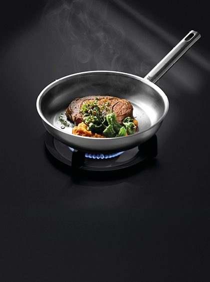
Frying Pans
Engineered for precision. Explore our curated selection of professional-grade cookware designed to master every culinary technique from high-heat browning to delicate reductions.
The right pan for every dish
From a golden crust on a steak to gently fried eggs and fish: choose how you like to cook, and we’ll show you the WMF pans made for it.
Compare our frying pans
Intense Searing
Gentle Frying
Ideal for steaks and anything that needs golden crispy crusts
Ideal for anything delicate such as eggs, fish and vegetables.
Steel Pro Uncoated
Shop Now
Resist Pro+
Shop NowNon-Stick Pro+
Shop NowCeramic Pro+
Shop NowNon-Stick Pro
Shop Now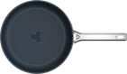
Ceramic Pro
Shop NowHeat
Performance
Performance
Even heat
Fast & even heat
Fast & even heat
Fast & even heat
Even heat
Even heat
Construction
1-ply
3-ply
3-ply
3-ply
1-ply
1-ply
Non-Stick
Performance
Performance
–
SearProtect® Ceramic
Permadur® non-stick
CeraDur® ceramic non-stick
Permadur® non-stick
CeraDur® ceramic non-stick
Cooktop
Compatibility
Compatibility
All cooktops, incl. induction
All cooktops, incl. induction
All cooktops, incl. induction
All cooktops, incl. induction
All cooktops, incl. induction
All cooktops, incl. induction
Oven-Safe
Up to 350°C
Up to 300°C
Up to 250°C
Up to 300°C
Up to 250°C
Up to 300°C
Dishwasher-Safe
Yes
Yes
Yes
Yes
Yes
Yes
Design &
Handling
Handling
Heat-reduced handle
Drip-free pouring
Drip-free pouring
Heat-reduced handle
Drip-free pouring
Drip-free pouring
Heat-reduced handle
Drip-free pouring
Drip-free pouring
Heat-reduced handle
Drip-free pouring
Drip-free pouring
Heat-reduced handle
Drip-free pouring
Drip-free pouring
Heat-reduced handle
Drip-free pouring
Drip-free pouring
Warranty
20 years
5 years
5 years
5 years
3 years
3 years
What customers say about WMF frying pans
You have to buy these
Very good pan, good heat distribution, good frying results, they look very good — all top.
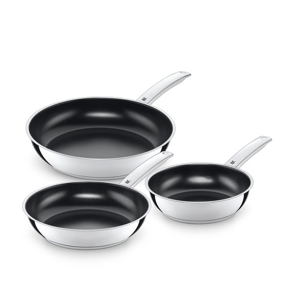
Reviewed productDurado Fry Pan SetSuperb quality
Superb quality. An outstanding product that is a lot of fun to use.
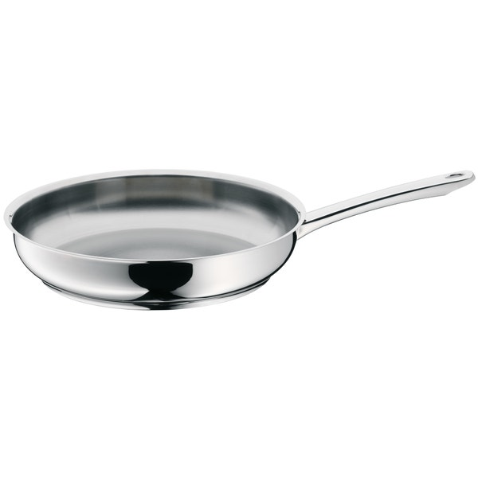
Reviewed productProfi Fry PanSuper fast delivery
I have bought 3 pans in a short space of time. Cooking is a joy. Superb quality.
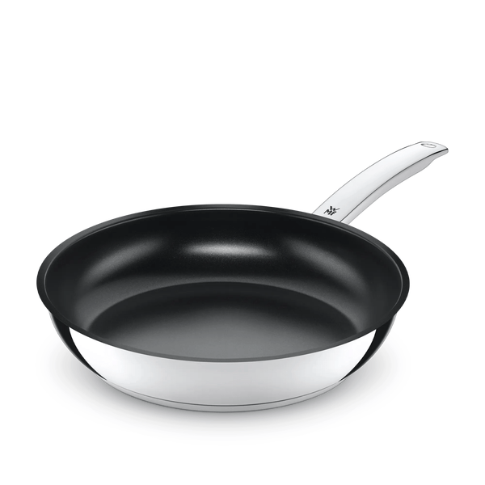
Reviewed productDurado Fry PanA guide to WMF frying pans
Choose the size first, then the material and surface for the way you cook, then the range.
Size guide
Choose the size by how many people you usually cook for, not by the biggest dish you make once a year. If a pan is too small, food piles up and steams instead of browning; if it is much bigger than the cooking zone, the edges stay cooler than the centre. Many households pair a 24 cm pan for everyday cooking with a 28 cm pan for larger meals.
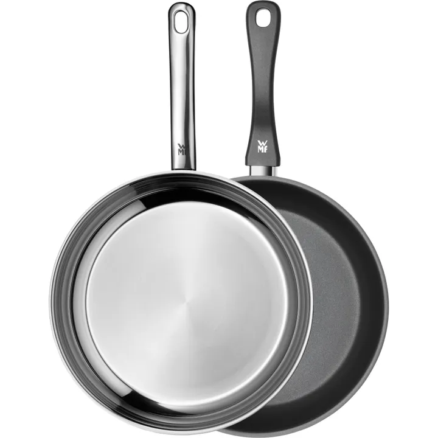
| Size | Good for |
|---|---|
| 1–2 people, eggs and small portions | |
| 2–3 people, everyday frying | |
| 3–4 people, larger portions and steaks |
The size is the diameter at the rim; the flat base that sits on the cooktop is smaller. Choose a base that matches your cooking zone.
Material and surface
The quickest way to choose is to decide whether you want a coating. Uncoated pans take high heat and leave browned bits in the pan that turn into a sauce with a splash of wine or stock. Coated pans let eggs, fish and pancakes slide off with very little fat; they do best at moderate heat, and most are best used with wooden or silicone utensils. A multi-layer base spreads heat across the whole surface, so the centre does not scorch while the edges stay cool.
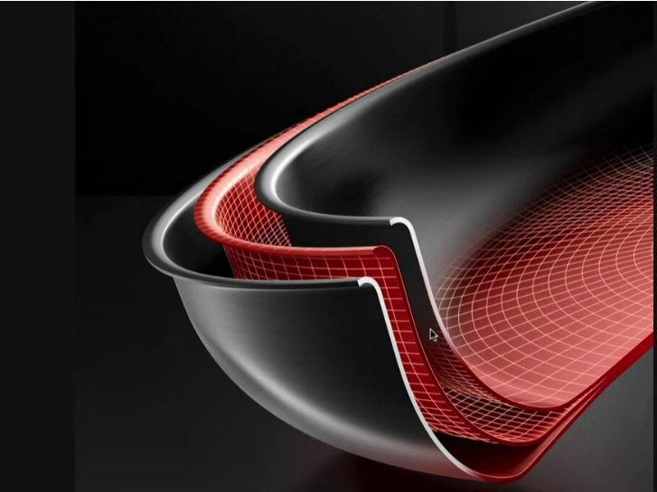
| Material and surface | Good for |
|---|---|
| Uncoated | |
| High heat, searing and pan sauces; food can stick until it has browned. 1-ply is a single layer of Cromargan® stainless steel; 3-ply has three bonded layers up to the rim, so heat spreads into the sides. | |
| WMF’s own material: a steel core fused with a mineral compound, with no separate coating. For searing and everyday cooking, in several colours. | |
| Silargan® | Silit’s own material: a steel core fused with a functional ceramic layer, with no separate coating. |
| Coated | |
| A raised stainless-steel honeycomb with a non-stick coating in between, for searing with easier release. | |
| Eggs, fish and pancakes at low to medium heat. Delicate food comes away easily. | |
| Fish, vegetables and eggs at moderate heat, with a little fat. | |
| Light and quick to heat, with a non-stick or ceramic surface for gentle frying. Cast aluminium is not for induction. | |
Range
Each range combines a material, a surface and a handle design for a particular way of cooking. If you sear often, look at the uncoated and honeycomb ranges; if you mostly cook eggs, fish and vegetables, a ceramic or non-stick range will suit you. Pans in the same range share one look, so you can add sizes over time and they still belong together.

| Range | Material and surface | Cooking style |
|---|---|---|
| 3-ply stainless steel, honeycomb non-stick or ceramic surface | All-round | |
| Fusiontec® | All-round | |
| Uncoated stainless steel | Intense searing | |
| Stainless steel, ceramic surface | Gentle frying | |
| Stainless steel, non-stick surface | Gentle frying | |
| Cast aluminium, non-stick surface | Gentle frying |
Frequently asked questions
Which pan suits which food?
For steak, crispy potatoes and anything that needs a golden-brown crust, choose uncoated stainless steel or a honeycomb-structured surface. For fish, eggs and vegetables at moderate heat, a non-stick or ceramic surface makes delicate food easier to turn. If you cook a little of everything, start with an all-round pan in the size you use most.
Stainless steel or coated: what is the difference?
Uncoated stainless steel suits high heat and builds a crust, but food can stick until it has browned. A non-stick or ceramic surface lets delicate food come away easily at moderate heat and needs gentler care. Many kitchens use one of each.
Why does meat stick to a new stainless-steel pan?
With uncoated stainless steel, the heat, the amount of fat and the moment you turn the food all play a part. Meat often sticks at first and comes away once a crust has formed. Preheat the pan carefully and follow the advice for your model.
Which pans work on induction?
Induction needs a pan with a magnetic base: if a magnet sticks to the base, the pan works on induction. Each product tile shows which cooktops the pan suits, and you can filter by cooktop type above.
Which pan size should I choose?
The size given is the diameter at the rim; the flat base that sits on the cooktop is smaller. Choose a base that matches your cooking zone. As a guide: 20 cm for 1–2 people, 24 cm for 2–3 people and 28 cm for 3–4 people.
Can pans go in the dishwasher?
It depends on the material, surface and model. We recommend washing coated pans by hand. Check the care instructions for your model.
Getting the best from each surface
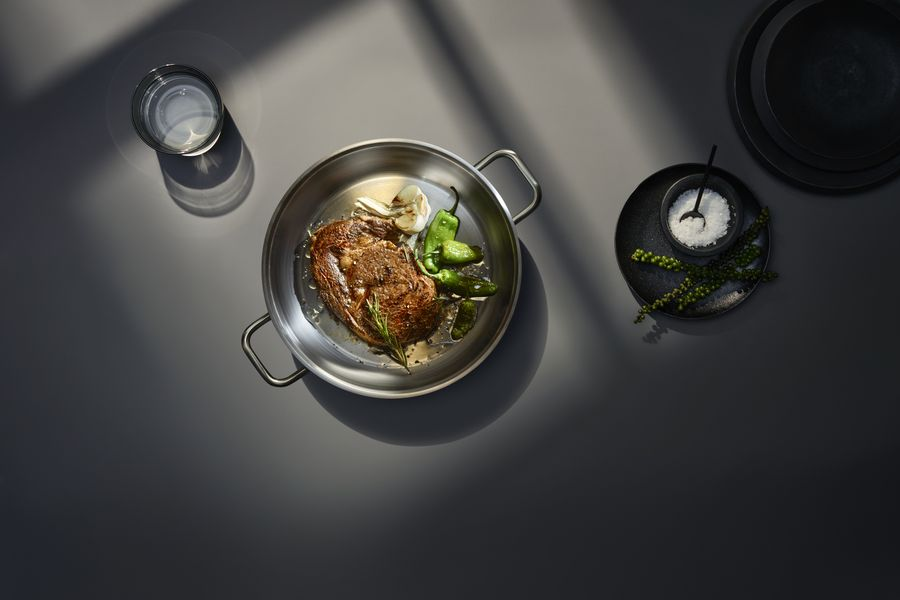
Uncoated stainless steel
Preheat over medium heat, add the fat, then the food. Wait until a crust forms before turning: the food then comes away more easily. Soak any residue in warm water before washing.
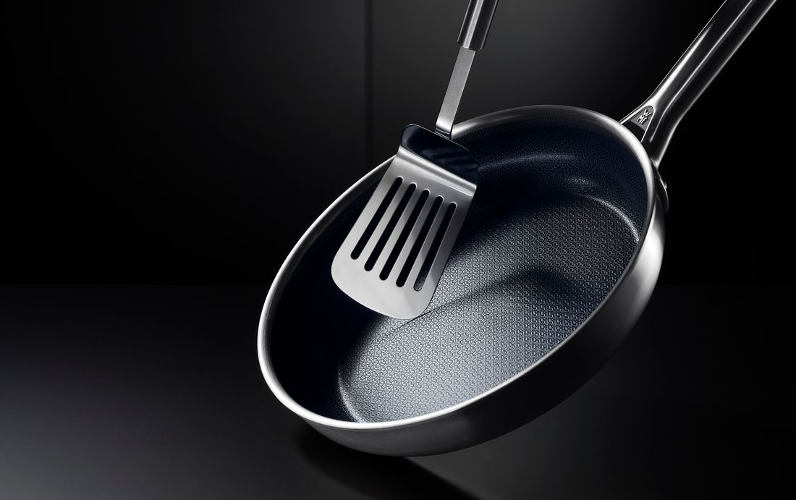
Non-stick
Cook at low to medium heat and do not heat the empty pan on high. Let the pan cool, then wash it by hand with mild washing-up liquid and a soft sponge.
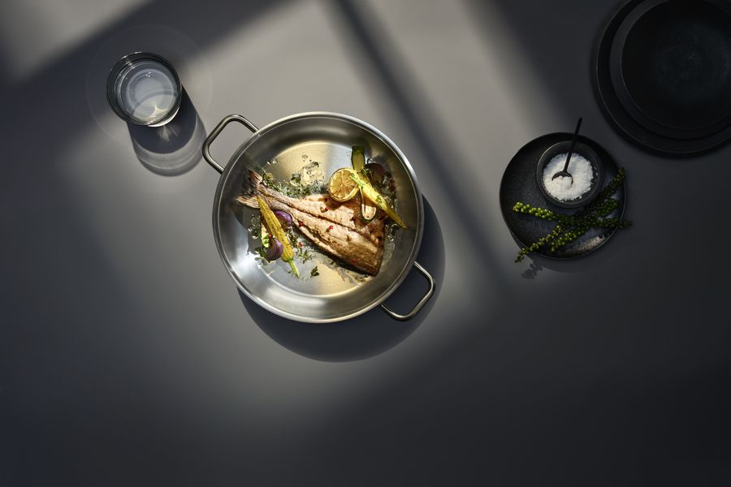
Ceramic
Add a little fat, even for delicate food, and keep to moderate heat. Let the pan cool, then wash it by hand with a soft sponge.
Still not sure?
Answer a few questions and the Pan Finder suggests pans that match how you cook.
Recipes for your pan
Ideas from the WMF kitchen to try in your new pan.
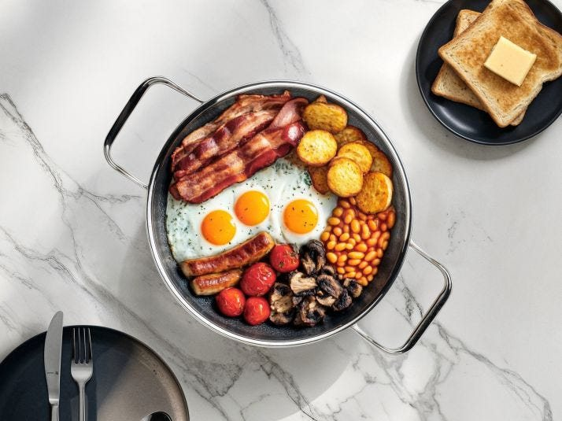
35 minEnglish breakfast from the pan
View recipe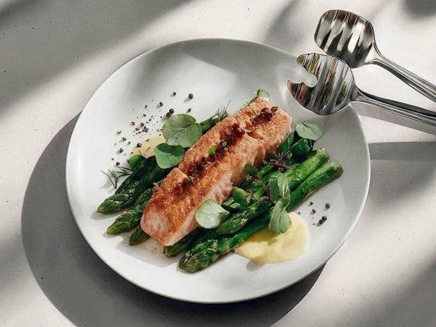
15 minPan-fried salmon with asparagus and hollandaise
View recipe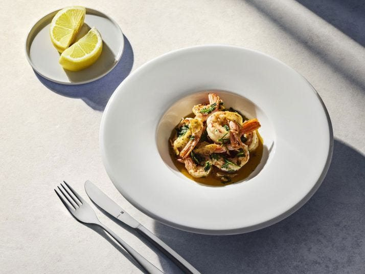
30 minMediterranean prawns with chilli and garlic
View recipe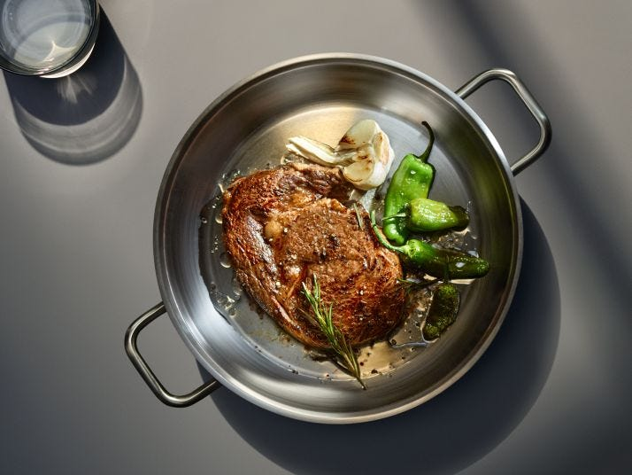
30 minRib-eye steak with padrón peppers
View recipe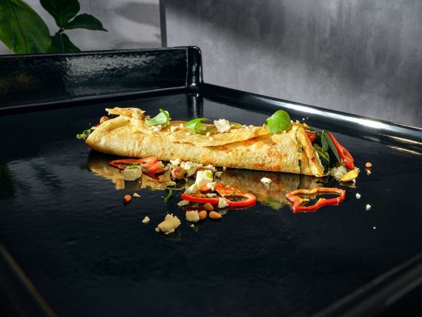
40 minSavoury pancakes with cheese, spinach and feta
View recipe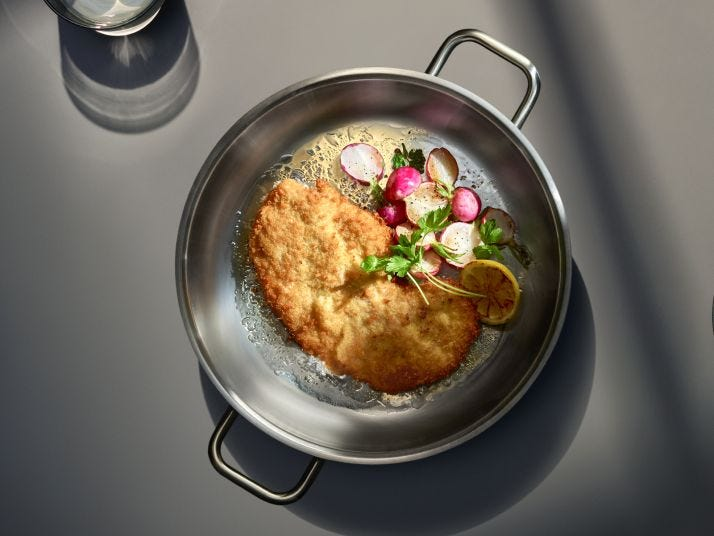
25 minWiener schnitzel with sautéed radishes
View recipe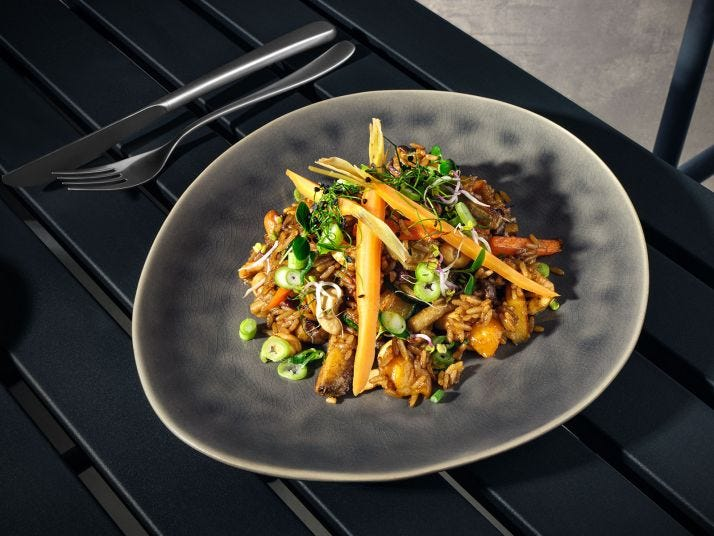
25 minAsian fried rice with cashew nuts
View recipe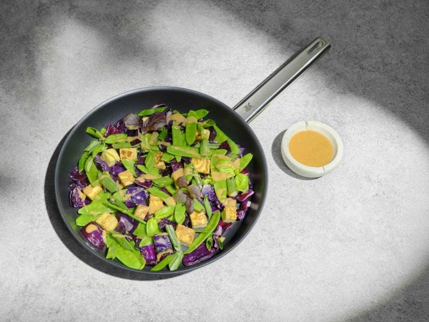
30 min